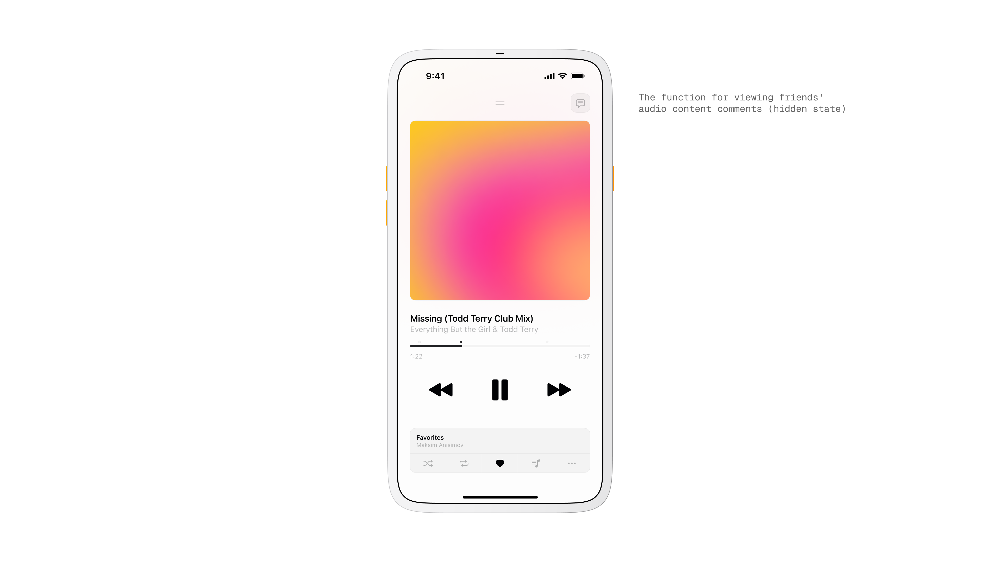
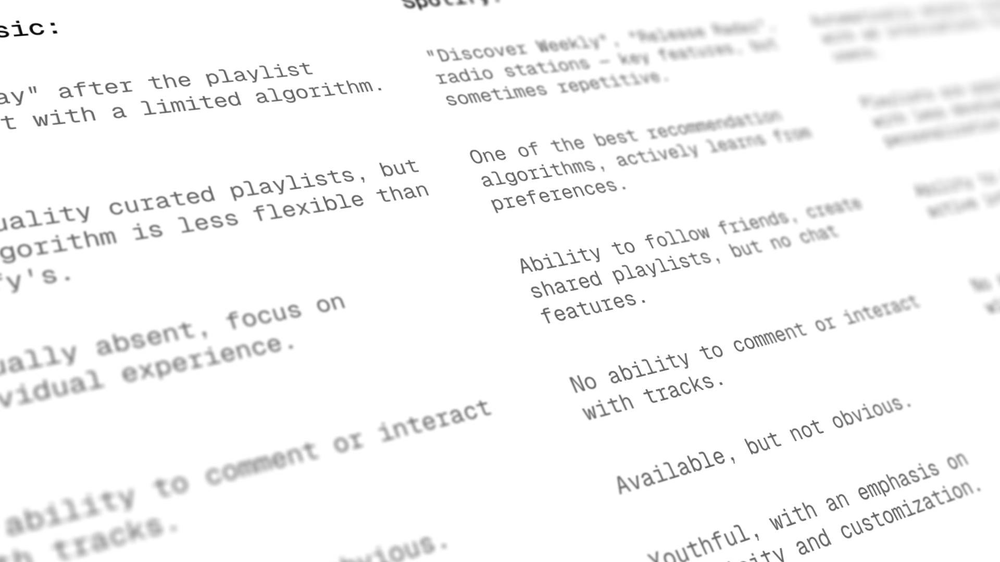
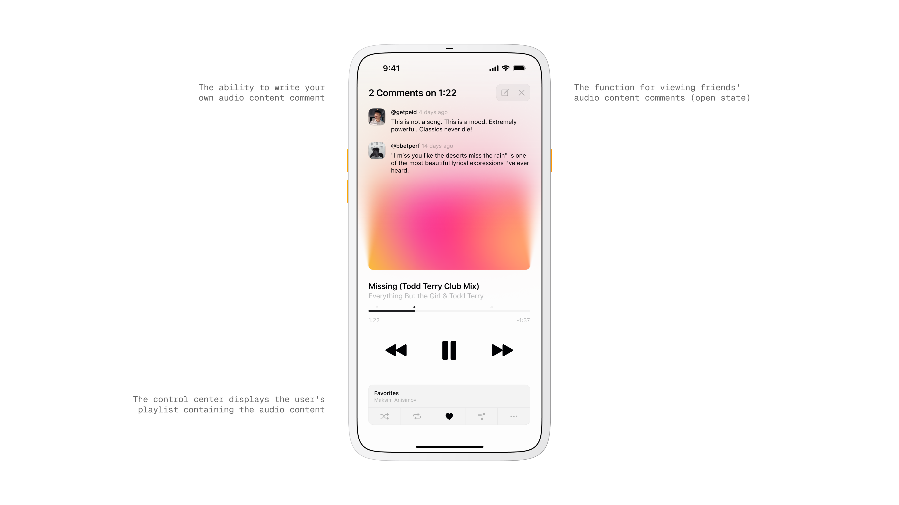
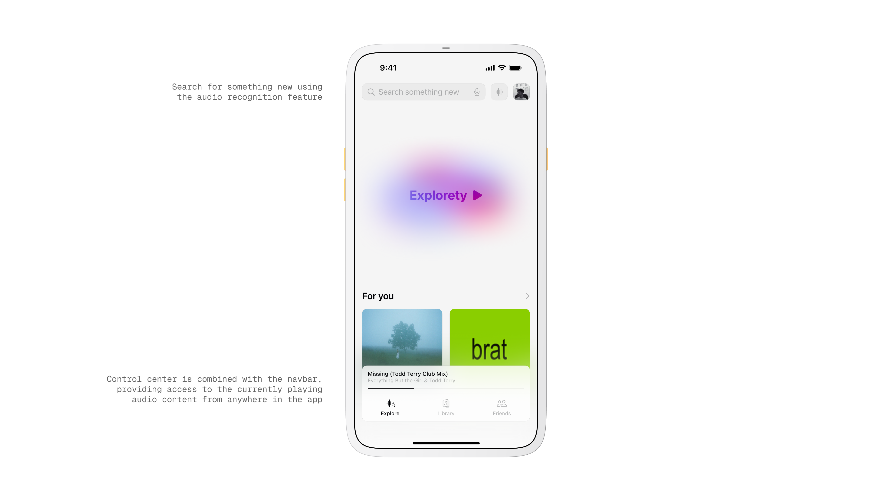
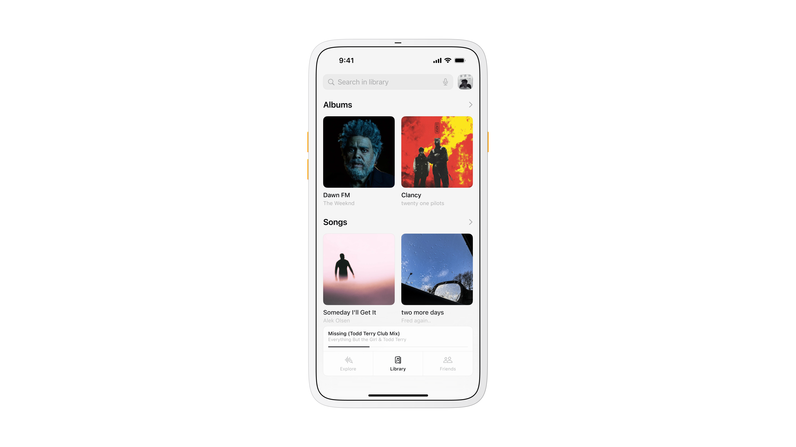
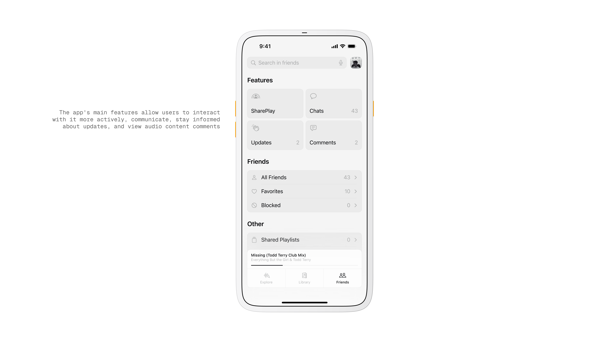
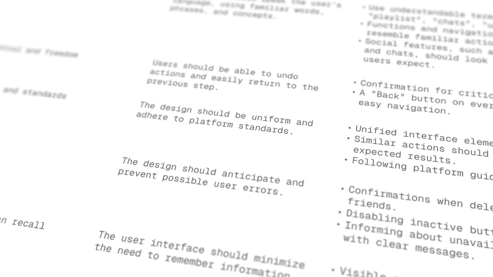

How I Created a Bold, Youth-Oriented Music Discovery App.
Musyka. Nov 24.
Designed a vibrant digital music experience tailored specifically to the dynamic preferences of new generation.
Musyka is my vision for a fresh approach to music discovery and sharing, featuring an engaging, visually bold interface tailored for young audiences.
Problem.
Most music apps feel heavy when you just want to press play and share a moment.
Discovery takes effort, conversations live far from the player, and reacting to a specific second in a track is awkward.
Goal.
Create a light, social listening flow. I wanted play to feel instant, discovery to feel playful, and comments to live right where the music is happening.
Primary Insight.
People respond to presence and pace. If the app keeps you in the song while surfacing what friends think at the exact second, you engage more and switch screens less.

Control Center screen.
Research and Observation.
I reviewed Spotify, Apple Music, and YouTube Music, and pulled patterns from TikTok and BeReal.
The common thread was quick feedback loops and timestamped context. That shaped the idea of comments pinned to a moment in the track.

Competitive benchmarking.
Exploration and Concept.
I sketched different ways to reduce navigation. Instead of long lists I leaned into cards and a persistent mini player.
I created Explorety on the home screen as a one tap way to start an endless stream.
For comments I tested a small lane that expands only when needed.
Design and Interaction.
The player is the center. Like, save, skip, and comment are reachable with one hand.
Tapping a comment jumps to that exact second.
The mini player docks to the nav bar so your current track is always available from Explore, Library, or Friends.

Track comment overlay.
Visual and Motion.
I kept the surface clean and calm so the music art stands out. Soft gradients and quiet scaling make transitions feel natural.
Micro animations pulse on play and on comment reveal to guide attention without shouting.
Key Screens.
Now Playing shows art, simple controls, a progress bar, and a compact comment stack that opens when you want to read or write.
Home introduces Explorety with a large, playful entry and a For You rail for quick picks.
Library focuses on clarity with Albums and Songs that feel obvious to scan.
Friends groups the social tools in one place with Chats, Updates, and Shared Playlists so you can react or build together without leaving the music.

Explore screen.

Library screen.

Friends screen.
User Flow and Sitemap.
I mapped a very short loop. Open the app, hit Explorety, hear something, react or save, and keep moving.
The sitemap acted as a checklist to keep patterns consistent across tabs and to stop scope creep.
Scenarios.
You start Explorety and instantly get a track. At 1:22 you see a friend's note and jump to that moment. You like it and save to Favorites. Later you open Friends and drop the track into a shared playlist that updates for everyone.
Heuristics Applied.
Clear status at all times. Predictable placement of controls. Simple language. Easy undo and Back. One way to perform each core action. Visual rhythm that stays the same across tabs.

Heuristic evaluation.
Key Metrics.
Starts from Explorety, jumps into timestamped moments, saves to Favorites, and the number of shared playlists created. These tell me if the experience is fast, social, and sticky.
Insights.
Key metrics.
Takeaway.
Musyka worked best when the interface felt invisible. Keeping conversation next to playback made the app feel alive without turning it into a chat tool.
If I iterate again I will simplify the Friends hub and tighten the comment composer so writing feels as quick as a tap on Play.
More in Projects.
Developed intuitive digital cockpits integrating real-time data visualization, driver-centric design, and responsive interfaces.
Crafted native-style widgets for car controls, bringing Apple's clarity and consistency into everyday driving.
Engineered an innovative mobile app simplifying restaurant interactions through streamlined ordering and efficient pickup.
Built a versatile no-code tool empowering designers to rapidly prototype and share UI components and full websites.
Established a minimalist stationery brand that seamlessly blends functional design and engaging digital storytelling.
More in Nuggets.
More in Readings.
A reflection on how Apple Maps uses voice intonation to manage your emotional state while driving, and why Google Maps and Waze don't.
A reflection on finally owning the Pebble 2 Duo, a tiny comeback story about detail, nostalgia, and honest design.
A short manifesto for what Readings is, how I use it, and how to read it.
Copyright Maksim Anisimov.